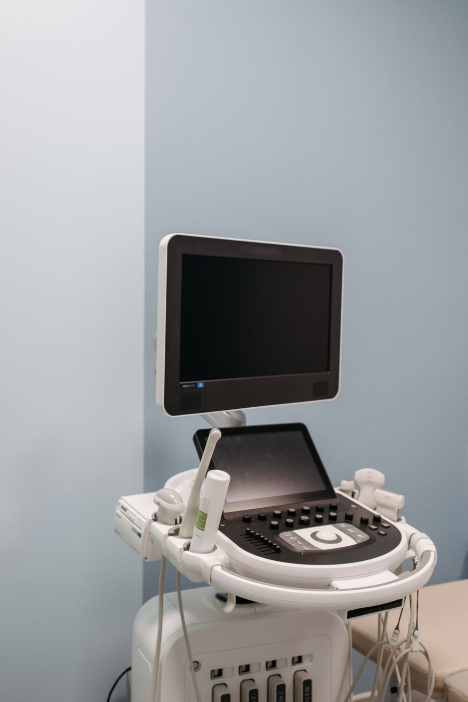
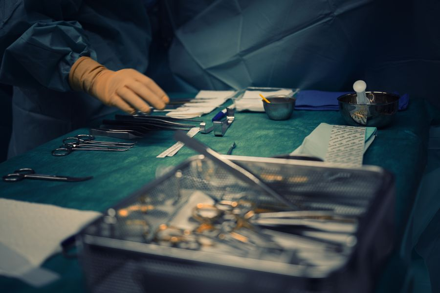
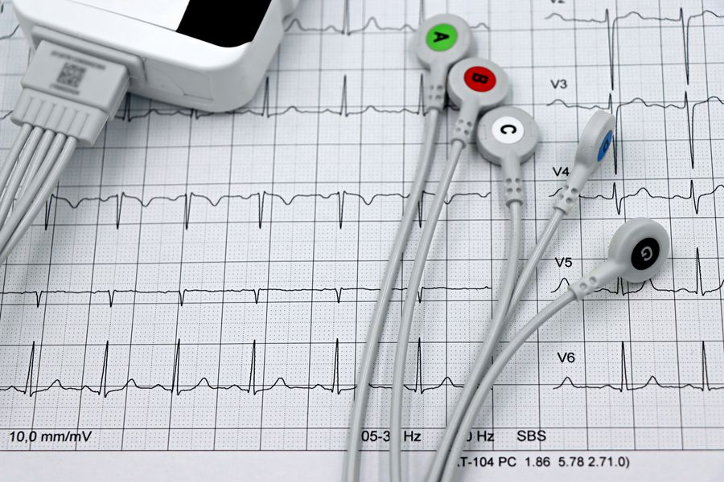
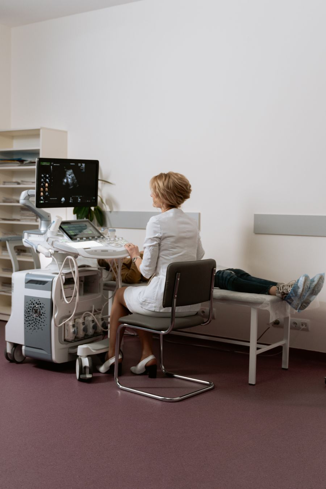
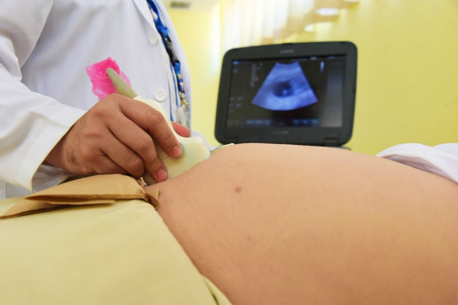

Ein breites Spektrum der Inneren Medizin
Mit ausreichend Zeit für ein persönliches Gespräch und Untersuchungen auf dem neuesten medizinischen Stand.
Behandlung internistischer Fragestellungen
Durch meine langjährige Tätigkeit als Internistin im Krankenhaus hatte ich täglich mit Erkrankungen des gesamten Spektrums der Inneren Medizin zu tun – ob Herz und Kreislauf, Diabetes, Bluthochdruck, Magen-Darmerkrankungen oder mein Spezialgebiet, die Nieren. Diese langjährige praktische Erfahrung sowie die laufende Teilnahme an Kongressen und Fortbildungen ermöglicht es mir, Sie nach den neuesten medizinischen Richtlinien zu behandeln.
- Herzerkrankungen (Herzschwäche, Rhythmusstörungen, Herzklappenerkrankungen, KHK)
- Bluthochdruck
- Diabetes & Stoffwechselerkrankungen
- Nierenerkrankungen
- Magen-Darmbeschwerden
- Gallengangs- & Lebererkrankungen
- Schilddrüsenerkrankungen
- Bluterkrankungen
- Osteoporose
Diagnostik

Ich nehme mir ausreichend Zeit für eine ausführliche Anamnese sowie eine gewissenhafte körperliche Untersuchung in einem ruhigen Ambiente. Dazu gehören das Abtasten der Schilddrüse, das Abhören von Herz und Lunge, das Abtasten und Abhorchen des Bauches, die Inspektion der Beine, sowie Blutdruck- und Pulsmessungen. Wir erheben gemeinsam Ihr persönliches Risikoprofil und besprechen, wie Sie aktiv Ihre Gesundheit fördern und Ihre Lebensqualität steigern können.
Ruhe-EKG
Mit Hilfe von Elektroden wird die elektrische Aktivität des Herzens über dem Brustkorb sowie über Armen und Beinen abgeleitet und auf einem Monitor dargestellt – zum Erfassen von Informationen über Herzrhythmus, Herzfrequenz, Erregungsausbreitungsstörungen und strukturelle Herzerkrankungen.
Belastungs-EKG (Ergometrie)
Beim Belastungs-EKG erfolgt die Messung während körperlicher Aktivität am Fahrradergometer, um das Herz bei Belastung zu testen. Es dient der Erfassung Ihrer individuellen Leistungsfähigkeit und stellt die wichtigste nicht-invasive Untersuchungsmethode zur Überprüfung Ihrer Durchblutung am Herzen dar. Weiters ist diese Untersuchung wichtig zur Objektivierung insbesondere unter körperlicher Anstrengung auftretender Herzrhythmusstörungen und zur Therapiekontrolle eines medikamentös eingestellten Blutdrucks sowie zur Erfassung Ihrer Leistungsfähigkeit.
Langzeit-Blutdruckmessung
Über 24 Stunden werden Ihre Blutdruckwerte automatisch gemessen. Diese Untersuchung zeigt, wie sich Ihr Blutdruck tagsüber, nachts und unter körperlicher Anstrengung verhält und ermöglicht eine gezielte Therapieanpassung.
Langzeit-EKG
Das Langzeit-EKG zeichnet über 24–72 Stunden Ihre Herzaktivität auf. Damit lassen sich Herzrhythmusstörungen und Beschwerden wie Schwindel, Herzrasen oder Ohnmachtsanfälle abklären. Herzrhythmusstörungen treten oft unvermittelt auf und können in der „Momentaufnahme" des Ruhe-EKG nicht erfasst werden. Sie bekommen ein kleines Gerät in der Ordination angelegt und bringen es am Folgetag wieder zurück. Das Ergebnis wird dann von mir ausgewertet und mit Ihnen besprochen.
Blutabnahme
Die Blutabnahme erfolgt direkt in unserer Ordination. Durch Zusammenarbeit mit einem umliegenden Labor können die meisten wichtigen Blutwerte bestimmt werden.
Harn- und Stuhluntersuchungen
Abklärung von Verdauungsbeschwerden. Eine Harnanalyse liefert wichtige Hinweise auf Erkrankungen der Nieren und der Harnblase.
Ultraschall
- Echokardiographie (Herzultraschall)
- Bei dieser Untersuchung wird das Herz in seiner Struktur und Funktion untersucht. Morphologie und Funktion der Herzklappen werden objektiviert.
- Sonographie des Abdomens
- Schmerzfreie Ultraschalluntersuchung des Bauchraums von außen.
- Sonographie der Nieren
- Schmerzfreie Ultraschalluntersuchung der Nieren von außen.
- Sonographie der Schilddrüse
- Schmerzfreie Ultraschalluntersuchung der Schilddrüse von außen.
- Triplex-Sonographie der Carotis- und Vertebralarterien (Halsgefäße)
- Die Halsschlagadern sind dem Ultraschall gut zugänglich, sodass die Beschaffenheit der Arterienwand beurteilt werden kann. So können einerseits Kalkablagerungen oder gar Engstellen erkannt werden und andererseits kann indirekt das Risiko für das Bestehen von Gefäßwandveränderungen im Bereich der Herzkranzgefäße abgeschätzt werden.
- Sonographie der Beinvenen
- Zum Ausschluss einer Thrombose.
Spirometrie (Lungenfunktionstest)
Das ist ein diagnostisches Verfahren zur Messung der Lungenfunktion. Bei der Untersuchung wird über ein Mundstück, das mit den Lippen fest umschlossen wird, ein- und ausgeatmet. Dieses ist mit einem Messgerät verbunden. Ihre Nase wird während der Messung mit einer Nasenklemme verschlossen. Mit diesem Lungenfunktionstest lassen sich verschiedene Parameter bestimmen, die Aufschluss über das Vorliegen einer Atemwegs- oder Lungenerkrankung geben.
Vorsorge- & Gesundenuntersuchung
- Vorsorgeuntersuchung
- Einmal jährlich können Sie ab dem 19. Lebensjahr mit Wohnsitz in Österreich die Vorsorgeuntersuchung kostenlos in Anspruch nehmen. Im Rahmen der Gesundenuntersuchung wird diese bei uns durchgeführt.
- Gesundenuntersuchung
- Herz-Kreislauf-Erkrankungen verursachen in unserer Gesellschaft die häufigsten Gesundheitsbeschwerden. Schlechte Ernährungsgewohnheiten und Bewegungsmangel tragen dazu bei, dass wir uns schnell müde und erschöpft fühlen. Eine Änderung des Lebensstils ist hier die wichtigste Maßnahme. Ist eine weitere Behandlung notwendig, entwickeln wir gemeinsam die besten Lösungen, um ein Fortschreiten der Erkrankung zu verhindern und Ihre Lebensqualität zu verbessern.
OP-Freigabe

Vor geplanten Operationen wird eine internistische Operationsfreigabe vom Krankenhaus verlangt. Wir führen die dazu notwendigen Untersuchungen durch. Falls eine weiterführende Untersuchung (z. B. Lungenröntgen) notwendig ist, erhalten Sie bei Bedarf eine Überweisung. Von mir bekommen Sie anschließend eine internistische Stellungnahme bezüglich des Nutzen-Risiko-Verhältnisses vor dem geplanten operativen Eingriff.
Manager-Check

Insbesondere für Menschen in leitender Position nimmt die physische und psychische Belastung stetig zu. Lange Arbeitstage, hoher Leistungsdruck, große Verantwortung und mangelnde Erholung führen häufig zu Erkrankungen des Herz-Kreislaufsystems.
Ich biete Ihnen eine umfassende Untersuchung an einem einzelnen Termin: Anamnesegespräch, klinische Untersuchung, Ruhe-EKG, Ergometrie, Herzultraschall und Ultraschall der Halsgefäße. Bitte bringen Sie einen aktuellen großen Blutbefund sowie Ruhe-Blutdruckwerte der letzten Wochen mit – alternativ können Sie vorab zur Blutabnahme in die Ordination kommen.
Interne Mutter-Kind-Pass-Untersuchung

Zwischen der 17. und 20. Schwangerschaftswoche ist eine internistische Untersuchung vorgesehen. Sie dient der Früherkennung und Behandlung möglicher Erkrankungen.
Nierengesundheit

Unsere Nieren sind ein wahres Wunderwerk: Jeden Tag filtrieren sie über 1.500 Liter Blut und übernehmen zahlreiche weitere wichtige Funktionen im Körper. Viele Erkrankungen können den Nieren schaden – allen voran Bluthochdruck und Diabetes, aber auch autoimmunologische Erkrankungen (Glomerulonephritiden) oder angeborene Erkrankungen wie familiäre Zystennieren.
Ich bin spezialisiert auf die Diagnose und Behandlung von Nierenerkrankungen und lege ein besonderes Augenmerk auf Herz- und Gefäßerkrankungen, die bei Patientinnen und Patienten mit Nierenschwäche gehäuft vorkommen.
Nierensonographie
Mit dem Ultraschall kann ich Ihre Nieren schmerzfrei, von außen untersuchen. Dabei kann ich einerseits die Form und Größe der Nieren beurteilen und andererseits bestimmte Veränderungen an den Nieren erkennen (wie z. B. Zysten oder Tumore). Außerdem kann ich mir die Durchblutung der Nieren, die Nierengefäße und auch die ableitenden Harnwege inklusive der Harnblase ansehen. Durch diese Untersuchung gewinne ich wertvolle Hinweise auf etwaige Erkrankungen der Nieren.
Laboruntersuchung
Wir können uns bestimmte Werte im Blut ansehen, die einerseits auf die Nierenfunktion selbst rückschließen lassen (z. B. Kreatinin) und andererseits auf Folgeerkrankungen einer Nierenschwäche hinweisen (wie z. B. eine Blutarmut im Rahmen einer Nierenschwäche oder Probleme mit dem Calcium- und Phosphatstoffwechsel).
Harnuntersuchung
Ihren Harn nehmen wir genauer unter die Lupe. Anhand von bestimmten Parametern im Harn können wir auf bestimmte Erkrankungen der Niere rückschließen. Ein besonderes Augenmerk legen wir dabei auf Eiweiß oder rote Blutkörperchen im Harn. Die Harnuntersuchung hilft uns aber auch, zwischen den meisten gutartigen Infektionen der Niere und schweren Erkrankungen der Niere zu unterscheiden.
Vorbereitung zur Nierentransplantation
Als Patientin oder Patient, die/der an Nierenschwäche leidet, wird dieses Thema vielleicht früher oder später für Sie relevant. Vor einer geplanten Nierentransplantation ist eine Vielzahl an Untersuchungen notwendig, um Sie und etwaige Spender auf eine Eignung zu testen. Einen Teil der geplanten Untersuchungen können wir in unserer Ordination durchführen. Für den Rest bin ich Ihnen behilflich und kann Ihnen die entsprechenden Überweisungen geben. Außerdem kann ich Sie sehr ausführlich über das Thema Nierentransplantation aufklären und so eventuelle Unsicherheiten aus dem Weg räumen.
Begleitung bei geplanter Nierentransplantation
Auch wenn Sie schon für eine Nierentransplantation gelistet wurden, sind regelmäßige Kontrolluntersuchungen notwendig, um Ihr Transplantationszentrum auf dem Laufenden zu halten. Nur dadurch kann gewährleistet werden, dass Sie weiterhin für die Nierentransplantation gelistet bleiben. Gerne bieten wir Ihnen auch hier alle notwendigen Untersuchungen an und begleiten Sie dabei.
Nachsorge nach erfolgter Nierentransplantation
Nach einer Nierentransplantation werden Patientinnen und Patienten meist an eine Nierenambulanz angebunden. Nichtsdestotrotz sind regelmäßige internistische Kontrollen notwendig, damit Ihr „neues" Organ weiterhin gut funktioniert und wir mögliche Folgeerkrankungen rasch erkennen und dementsprechend behandeln können. Durch meine jahrelange Erfahrung auf diesem Gebiet und meine Kontakte zu den einzelnen Transplantationszentren weiß ich genau, worauf wir achten müssen.